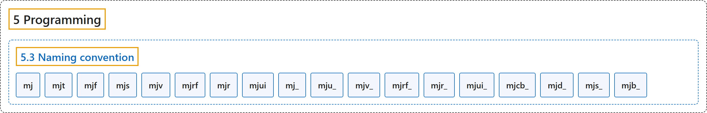

5.3 Naming convention
Classification

Glossary
| Term | Definition | 中文翻译 | Source |
|---|---|---|---|
| 5.3 Naming convention 命名约定 |
(context) "All symbols defined in the API start with the prefix “mj”." | （语境）API 中定义的所有符号都以前缀“mj”开头。 | Google DeepMind, n.d., "Naming convention", para. 1 |
| mj mj 前缀 |
"Core simulation data structure (C struct), for example mjModel." | 核心仿真数据结构（C 结构体），例如 mjModel。 | Google DeepMind, n.d., "Naming convention", item 1 |
| mjt mjt 前缀 |
"Primitive type, for example mjtNum and mjtGeom. Most types in this family are enums." | 基本类型，例如 mjtNum 和 mjtGeom。这一族中的大多数类型是枚举。 | Google DeepMind, n.d., "Naming convention", item 2 |
| mjf mjf 前缀 |
"Callback function type, for example mjfGeneric." | 回调函数类型，例如 mjfGeneric。 | Google DeepMind, n.d., "Naming convention", item 3 |
| mjs mjs 前缀 |
"Data structure related to procedural model editing, for example mjsJoint." | 与程序化模型编辑相关的数据结构，例如 mjsJoint。 | Google DeepMind, n.d., "Naming convention", item 4 |
| mjv mjv 前缀 |
"Data structure related to abstract visualization, for example mjvCamera." | 与抽象可视化相关的数据结构，例如 mjvCamera。 | Google DeepMind, n.d., "Naming convention", item 5 |
| mjrf mjrf 前缀 |
"Data structure related to filament rendering, for example mjrfContext." | 与 Filament 渲染相关的数据结构，例如 mjrfContext。 | Google DeepMind, n.d., "Naming convention", item 6 |
| mjr mjr 前缀 |
"Data structure related to OpenGL rendering, for example mjrContext." | 与 OpenGL 渲染相关的数据结构，例如 mjrContext。 | Google DeepMind, n.d., "Naming convention", item 7 |
| mjui mjui 前缀 |
"Data structure related to UI framework, for example mjuiSection." | 与 UI 框架相关的数据结构，例如 mjuiSection。 | Google DeepMind, n.d., "Naming convention", item 8 |
| mj_ mj_ 前缀 |
"Core simulation function, for example mj_step." | 核心仿真函数，例如 mj_step。 | Google DeepMind, n.d., "Naming convention", item 9 |
| mju_ mju_ 前缀 |
"Utility function, for example mju_mulMatVec. These functions are self-contained in the sense that they do not have mjModel and mjData pointers as their arguments." | 工具函数，例如 mju_mulMatVec。这些函数是自包含的，即它们的参数中没有 mjModel 和 mjData 指针。 | Google DeepMind, n.d., "Naming convention", item 10 |
| mjv_ mjv_ 前缀 |
"Function related to abstract visualization, for example mjv_updateScene." | 与抽象可视化相关的函数，例如 mjv_updateScene。 | Google DeepMind, n.d., "Naming convention", item 11 |
| mjrf_ mjrf_ 前缀 |
"Function related to filament rendering, for example mjrf_render." | 与 Filament 渲染相关的函数，例如 mjrf_render。 | Google DeepMind, n.d., "Naming convention", item 12 |
| mjr_ mjr_ 前缀 |
"Function related to OpenGL rendering, for example mjr_render." | 与 OpenGL 渲染相关的函数，例如 mjr_render。 | Google DeepMind, n.d., "Naming convention", item 13 |
| mjui_ mjui_ 前缀 |
"Function related to UI framework, for example mjui_update." | 与 UI 框架相关的函数，例如 mjui_update。 | Google DeepMind, n.d., "Naming convention", item 14 |
| mjcb_ mjcb_ 前缀 |
"Global callback function pointer, for example mjcb_control." | 全局回调函数指针，例如 mjcb_control。 | Google DeepMind, n.d., "Naming convention", item 15 |
| mjd_ mjd_ 前缀 |
"Functions for computing derivatives, for example mjd_transitionFD." | 用于计算导数的函数，例如 mjd_transitionFD。 | Google DeepMind, n.d., "Naming convention", item 16 |
| mjs_ mjs_ 前缀 |
"Functions for procedural model editing, for example mjs_addJoint." | 用于程序化模型编辑的函数，例如 mjs_addJoint。 | Google DeepMind, n.d., "Naming convention", item 17 |
| mjb_ mjb_ 前缀 |
"Functions for batched simulation, declared in mujoco/mjbatch.h, for example mjb_step." | 用于批量仿真的函数，声明在 mujoco/mjbatch.h 中，例如 mjb_step。 | Google DeepMind, n.d., "Naming convention", item 18 |
References
Google DeepMind. (n.d.). Programming. MuJoCo Documentation (Version 3.17.0). Retrieved October 31, 2026, from https://mujoco.readthedocs.io/en/stable/programming/index.html